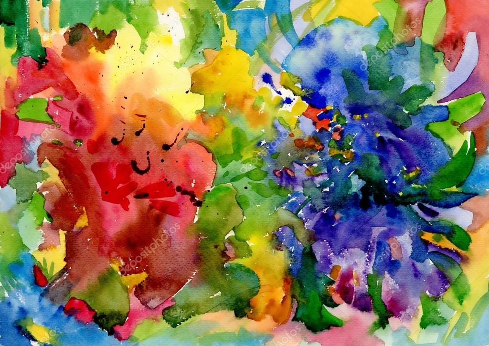

Welcome to the World of Paints
Paints come in various types and serve different purposes. Below are some common paint types:
1. Acrylic Paint
Acrylic paint is a versatile water-based paint that dries quickly and is available in various colors. It is suitable for use on multiple surfaces such as canvas, wood, and paper.
Uses: Fine art, crafts, and general painting projects.

2. Oil Paint
Oil paint is a slow-drying paint that uses oil as a binder. It offers rich colors and can create beautiful textures in artwork.
Uses: Traditional art, canvas painting, and oil painting techniques.

3. Watercolor Paint
Watercolor paint is a transparent paint that is activated with water. It is often used for delicate and expressive artworks.
Uses: Illustrations, landscapes, and botanical paintings.
